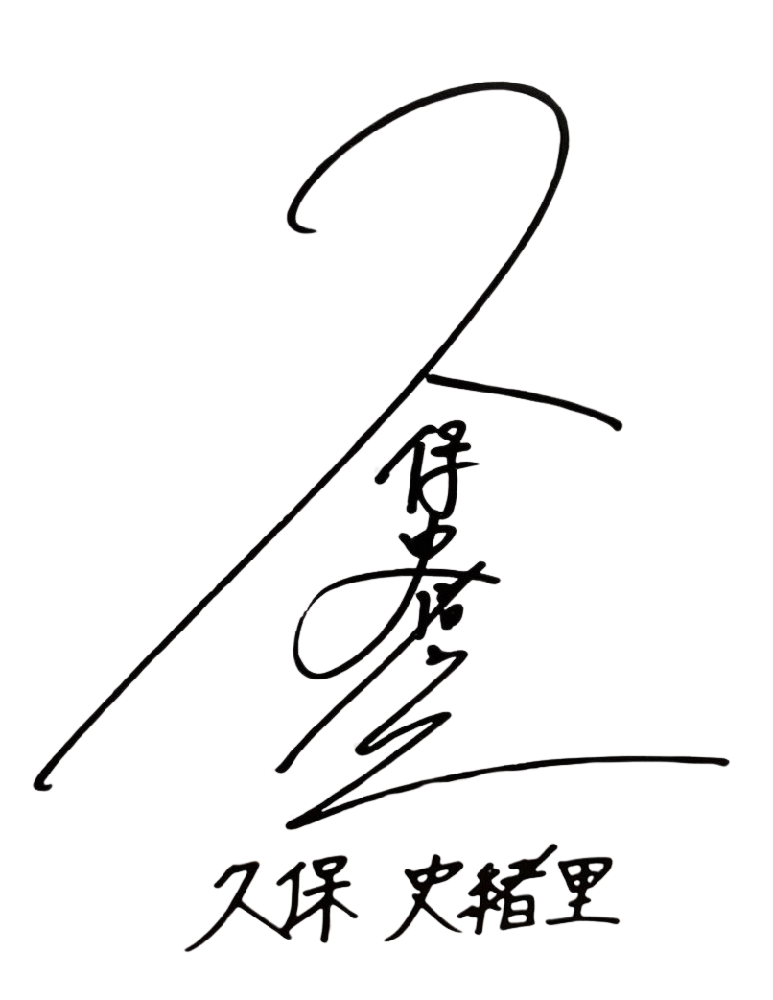

FOLLOW THE THREAD
文字的足跡
⌕
這一頁，還沒有找到。
試著縮短關鍵字，或換個年份與來源。
— 這一段時光，讀到這裡。 —
沿著她的文字，重訪每一年的風景。

2016.12.23 — 2025.12.07
收錄範圍依原站公開索引
FOLLOW THE THREAD
試著縮短關鍵字，或換個年份與來源。
— 這一段時光，讀到這裡。 —
ABOUT THIS COLLECTION
本年表依 kubo-archive 公開索引 ↗ 整理，收錄乃木坂官方部落格 120 篇、3期生接力部落格 34 篇、Seventeen MODEL’S BLOG 34 篇。閱讀版保留日文正文與圖片，提供字級調整、照片放大及前後篇切換，並保留原始備份入口。Seventeen 另提供官方原文連結。
日期為文章發布日，並非文中活動日期。主題標籤依正文內容整理，一篇文章可有多個主題，為本站編輯分類。搜尋範圍為標題、日期、來源及主題，不含文章全文。
索引擷取：2026.10.23 · 內容截至 2025.12.07 · 此版本不會自動同步新文章。乃木坂官方部落格與3期生接力部落格已關閉，請透過原站備份閱讀。本站為非官方整理，文章權利歸原作者及各來源所有。